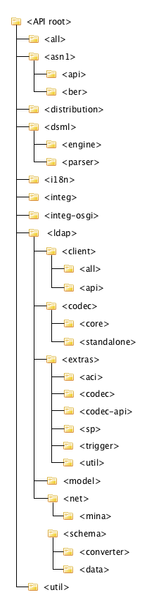
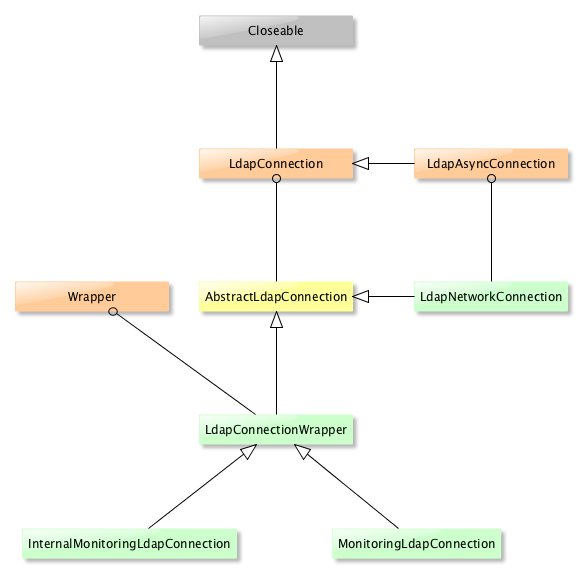
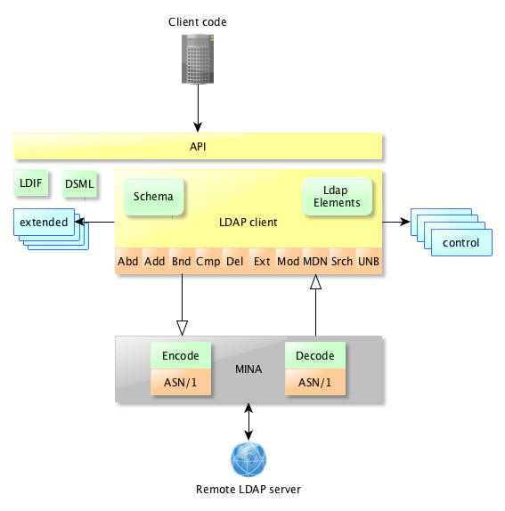

LDAP API
Downloads
Getting Started
Documentation
- Five minute tutorial
- User Guide
- API 1 to 2 migration
- JavaDocs
- JavaDocs 2
- Cross-Reference
- Cross-Reference 2
- Developer Guide
- Internal Guide
Support
Community
About Apache
2 - General Structure
The Apache LDAP API is split into many modules. Here is their hierarchy :

-
The all module is just a packaging module, gathering all the other modules in one single jar to simplify the work for those who want to use the API. One can import each module speparately, or the all module only. Note that it does not include the tests and integration modules (integ, integ-osgi and distribution)
-
The asn1 module contains the code needed to handle ASN/1 encoding/decoding.
-
The distribution module just create the packages
-
The dsml module covers DSML features
-
The i18n module contains all the messages, in various languages (english, french and german at the moment)
-
The integ module is for integration tests, covering many of the existing modules
-
The integ-osgi module covers tests related to OSGi integration. It checks that we can instanciate some component within an OSGi framework.
-
The ldap modules are the meat of the API : they contain all the needed modules related to LDAP, and mainly the model module. Note that the net module should not be part of ldap, per se…
-
The util module contains classes that are shared across the various modules.
Anyway, from a developer point of view, that does not tell a lot about the inner struture.
Clearly, the entry point is the Connection interface and its inherited class, which reside in the api-ldap-client-api module, in /ldap/client/.api. This is the interface - or one of its implementation - that is used to connect to a LDAP server. Here is the full hierarchy :

The user will need a LdapNetworkConnection most of the time, the wrapper is just used by the connection pool. Note that ApacheDS has its own implementation (not represented in this picture), called LdapCoresSessionConnection.
So, bottom line, if you want to have a look at how the API works, the entry point is the *LdapNetworkConnection class.
Layers
If you consider a LdapConnection, obviously, you will have to connect to a remote server, and you will need a part of the code handling the network. This is done - currently - using Apache MINA, which is an NIO framework. That means all the communication with the remote LDAP server is done asynchroniously.
We also made so the API to be OSGi compliant. That means some of the parts need to be ‘activated’. The idea was to make it possible to extend the API easily by adding component that could be loaded dynamically. So far, it’s not a completed work, but still, this is a on-going process.
The following pitcure shows for 10 000 feet the LDAP API architecture :
